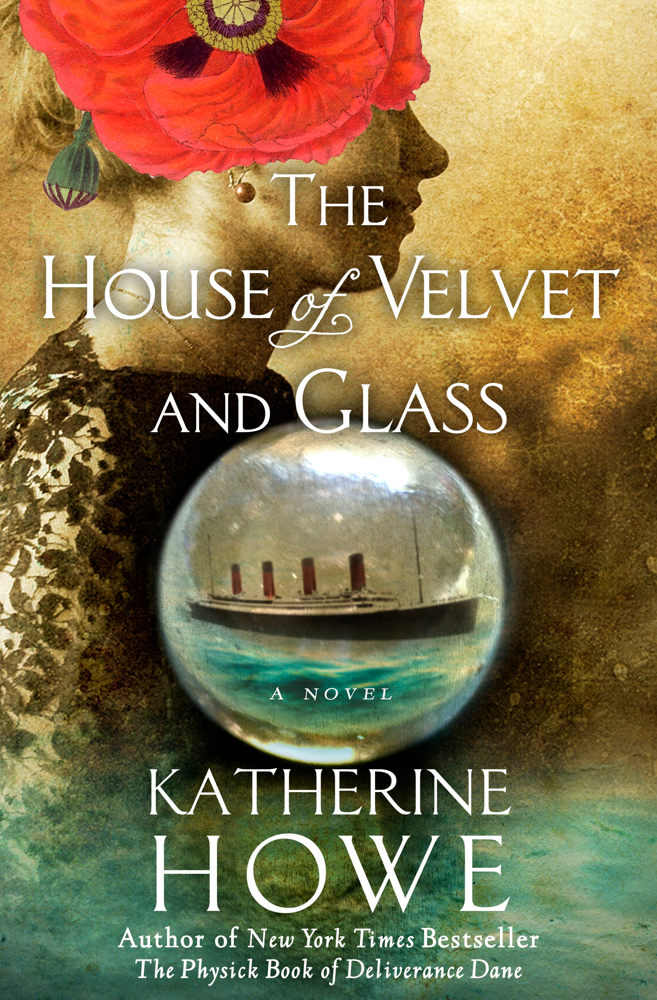

About This Book
Set after the Titanic disaster, this novel explores grief, spiritualism, and class in early twentieth-century New England.
Book
A novel of grief and séance culture in the aftermath of the early twentieth century.
Set after the Titanic disaster, this novel explores grief, spiritualism, and class in early twentieth-century New England.
